Code
library(Seurat)
library(tidyverse)
library(caret)
library(Matrix)
library(xgboost)
library(PRROC)
library(scCustomize)
library(cowplot)
library(ggpointdensity)
library(Biorplot)
source('bin/Palettes.R')
source('bin/includes.R')library(Seurat)
library(tidyverse)
library(caret)
library(Matrix)
library(xgboost)
library(PRROC)
library(scCustomize)
library(cowplot)
library(ggpointdensity)
library(Biorplot)
source('bin/Palettes.R')
source('bin/includes.R')Adult.Ex <- readRDS('../data/rds/Adult.Ex.rds')
sp.PFC <- readRDS('../data/rds/sp.PFC.rds')
PFC.MERFISH <- readRDS('../data/rds/PFC.MERFISH.rds')Adult.IT.PT.barcode <- subset(Adult.Ex, cells=colnames(Adult.Ex)[which(
(Adult.Ex$BC_num>0 & Adult.Ex$Ex_subtype == "IT") |
(Adult.Ex$BC_num>0 & Adult.Ex$Ex_subtype == "PT" & Adult.Ex$sample == "Adult1")
)])
sp.PFC.Left <- subset(
sp.PFC,
cells = colnames(sp.PFC)[which(sp.PFC$ABA_hemisphere=="Left")])
sp.PFC.Left.ITPT.barcode <- subset(sp.PFC, cells = colnames(sp.PFC)[which(
sp.PFC$ABA_hemisphere=="Left" & sp.PFC$SubType_Layer %in% c("L2/3 IT","L4/5 IT","L5 IT","L6 IT", "L5 PT") & sp.PFC$BC_num>0)])integrated_Exc <- Adult.Ex
PFC.MERFISH.Ex <- subset(PFC.MERFISH, cells = colnames(PFC.MERFISH)[which(
PFC.MERFISH$CellType == "Ext" & PFC.MERFISH$slice == 44
)])
seu.list <- list(Adult.Ex,PFC.MERFISH.Ex)
features <- SelectIntegrationFeatures(object.list = seu.list)
anchors <- FindIntegrationAnchors(object.list = seu.list,
anchor.features = features)
seu.inte <- IntegrateData(anchorset = anchors)
DefaultAssay(seu.inte) <- "integrated"
seu.inte <- ScaleData(seu.inte, verbose = FALSE)
seu.inte <- RunPCA(seu.inte, npcs = 30, verbose = FALSE)
seu.inte <- RunUMAP(seu.inte, reduction = "pca", dims = 1:30)
seu.inte$Sample <- "scRNAseq"
seu.inte$Sample[which(colnames(seu.inte) %in% colnames(PFC.MERFISH.Ex))] <- "MERFISH"
#saveRDS(seu.inte, '../data/rds/PFC.MERFISH.inte.rds')seu.inte <- readRDS('../data/rds/PFC.MERFISH.inte.rds')knitr::include_graphics("images/Figure7_A.png", dpi = 300)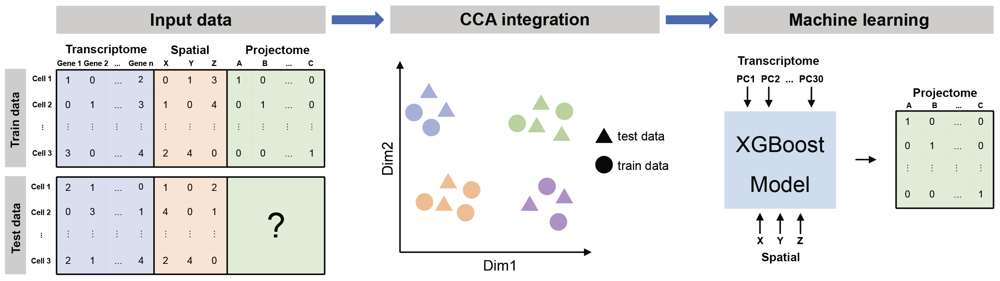
sp_Barcode <- c('VIS-I','SSp-I','CP-I','AUD-I','RSP-I',
'BLA-I','ACB-I','AId-I','ECT-I',
'ACB-C','ECT-C',
'CP-C','AId-C','RSP-C',
'LHA-I')
sp_gene <- rownames(sp.PFC)
sc_seu <- Adult.IT.PT.barcode
sc_seu$BC_motif <- apply(sc_seu@meta.data[,sp_Barcode], 1, function(x){
paste(names(x)[which(x>0)], collapse = ',')
})
sc_motif <- unique(sc_seu$BC_motif)
sp_seu <- sp.PFC.Left.ITPT.barcode
sp_seu$BC_motif <- apply(sp_seu@meta.data[,sp_Barcode], 1, function(x){
paste(names(x)[which(x>0)], collapse = ',')
})
sp_motif <- unique(sp_seu$BC_motif)
sc_seu <- subset(sc_seu, cells=colnames(sc_seu)[which(sc_seu$BC_motif %in% sp_motif)])
sp_seu <- subset(sp_seu, cells=colnames(sp_seu)[which(sp_seu$BC_motif %in% sc_motif)])
#sc_mat <- cbind(t(as.matrix(sc_seu@assays$RNA@data[sp_gene,])),sc_seu@meta.data[,sp_Barcode])
sc_mat <- sc_seu@meta.data[,sp_Barcode]
sc_mat[is.na(sc_mat)] <- 0
#sp_mat <- cbind(t(as.matrix(sp_seu@assays$RNA@data[sp_gene,])),sp_seu@meta.data[,sp_Barcode])
sp_mat <- sp_seu@meta.data[,sp_Barcode]
merge_mat <- rbind(sc_mat,sp_mat)
cor_mat <- cor(t(merge_mat))
sc_seu$sc_cellid <- rownames(sc_seu@meta.data)
sp_cellid <-
apply(sc_seu@meta.data,1,function(x){
sc_cell <- x["sc_cellid"]
sp_cells <- colnames(sp_seu)[which(sp_seu$BC_motif==x["BC_motif"] &
sp_seu$SubType==x["SubType"])]
if (length(sp_cells)>1){
names(which.max(cor_mat[sc_cell,sp_cells]))
}else{
sp_cells
}
})
sp_cellid <- as.character(sp_cellid)
sc_seu$sp_cellid <- sp_cellid
sc_seu$ML_new <- as.numeric(sp_seu$ML_new[sc_seu$sp_cellid])
sc_seu$DV_new <- as.numeric(sp_seu$DV_new[sc_seu$sp_cellid])
sc_seu$AP_new <- as.numeric(sp_seu$AP_new[sc_seu$sp_cellid])set.seed(20240716)
seu <- sc_seu
transcriptom_mat <- seu@reductions$pca@cell.embeddings[,1:30]
spatial_mat <- seu@meta.data[,c("ML_new","DV_new","AP_new")]
colnames(spatial_mat) <- c("ML","DV","AP")
proj_module <- c("PTi","ITi-D","ITi-V","ITc")
result_all <- data.frame()
for (i in 1:length(proj_module)){
proj_i <- proj_module[i]
y <- rep(0,nrow(seu@meta.data))
y[which(seu$Proj_module == proj_i)] <- 1
trainIndex <- createDataPartition(y, p = .7, list = FALSE, times = 1)
y_train <- y[trainIndex]
y_test <- y[-trainIndex]
# transcriptom + spatial
X <- as.matrix(cbind(transcriptom_mat, spatial_mat))
X_train <- Matrix(X[trainIndex,], sparse = T)
X_test <- Matrix(X[-trainIndex,], sparse = T)
dtrain <- xgb.DMatrix(data = X_train, label = y_train)
dtest <- xgb.DMatrix(data = X_test, label = y_test)
cv <- xgb.cv(data = dtrain, nrounds = 1000, nfold = 5, max_depth = 5, eta = 0.5,
early_stopping_rounds = 5, objective = "binary:logistic",
verbose = F)
model_xgb <- xgboost(data=dtrain, max_depth=5, eta=0.5, nthread = 5,
nround = cv$best_iteration, objective = "binary:logistic",
verbose = F)
pre <- predict(model_xgb, newdata = dtest)
#y_pre <- as.numeric(pre > 0.5)
#conf <- confusionMatrix(factor(y_pre, levels = c(0,1)),
# factor(y_test, levels = c(0,1)),
# mode = "everything", positive="1")
#Accuracy <- as.numeric(conf$overall["Accuracy"])
#F1 <- as.numeric(conf$byClass["F1"])
#PR <- pr.curve(scores.class0 = pre, weights.class0 = y_test, curve = TRUE)
ROC <- roc.curve(scores.class0 = pre, weights.class0 = y_test, curve = TRUE)
result1 <- data.frame('ROC_1'=ROC$curve[,1],
'ROC_2'=ROC$curve[,2],
'AUC'=ROC$auc,
'target'=proj_i,
'Experiment'="transcriptom + spatial"
)
# transcriptom
X <- as.matrix(transcriptom_mat)
X_train <- Matrix(X[trainIndex,], sparse = T)
X_test <- Matrix(X[-trainIndex,], sparse = T)
dtrain <- xgb.DMatrix(data = X_train, label = y_train)
dtest <- xgb.DMatrix(data = X_test, label = y_test)
cv <- xgb.cv(data = dtrain, nrounds = 1000, nfold = 5, max_depth = 5, eta = 0.5,
early_stopping_rounds = 5, objective = "binary:logistic",
verbose = F)
model_xgb <- xgboost(data=dtrain, max_depth=5, eta=0.5, nthread = 5,
nround = cv$best_iteration, objective = 'binary:logistic',
verbose = F)
pre <- predict(model_xgb, newdata = dtest)
y_pre <- as.numeric(pre > 0.5)
conf <- confusionMatrix(factor(y_pre, levels = c(0,1)),
factor(y_test, levels = c(0,1)),
mode = "everything", positive="1")
Accuracy <- as.numeric(conf$overall["Accuracy"])
F1 <- as.numeric(conf$byClass["F1"])
ROC <- roc.curve(scores.class0 = pre, weights.class0 = y_test, curve = TRUE)
result2 <- data.frame('ROC_1'=ROC$curve[,1],
'ROC_2'=ROC$curve[,2],
'AUC'=ROC$auc,
'target'=proj_i,
'Experiment'="transcriptom"
)
# spatial
X <- as.matrix(spatial_mat)
X_train <- Matrix(X[trainIndex,], sparse = T)
X_test <- Matrix(X[-trainIndex,], sparse = T)
dtrain <- xgb.DMatrix(data = X_train, label = y_train)
dtest <- xgb.DMatrix(data = X_test, label = y_test)
cv <- xgb.cv(data = dtrain, nrounds = 1000, nfold = 5, max_depth = 5, eta = 0.5,
early_stopping_rounds = 5, objective = "binary:logistic",
verbose = F)
model_xgb <- xgboost(data=dtrain, max_depth=5, eta=0.5, nthread = 5,
nround = cv$best_iteration, objective = 'binary:logistic',
verbose = F)
pre <- predict(model_xgb, newdata = dtest)
y_pre <- as.numeric(pre > 0.5)
conf <- confusionMatrix(factor(y_pre, levels = c(0,1)),
factor(y_test, levels = c(0,1)),
mode = "everything", positive="1")
Accuracy <- as.numeric(conf$overall["Accuracy"])
F1 <- as.numeric(conf$byClass["F1"])
ROC <- roc.curve(scores.class0 = pre, weights.class0 = y_test, curve = TRUE)
result3 <- data.frame('ROC_1'=ROC$curve[,1],
'ROC_2'=ROC$curve[,2],
'AUC'=ROC$auc,
'target'=proj_i,
'Experiment'="spatial"
)
# shuffle y
y_shuffle <- sample(y,length(y))
y_train <- y_shuffle[trainIndex]
y_test <- y_shuffle[-trainIndex]
X <- as.matrix(cbind(transcriptom_mat, spatial_mat))
X_train <- Matrix(X[trainIndex,], sparse = T)
X_test <- Matrix(X[-trainIndex,], sparse = T)
dtrain <- xgb.DMatrix(data = X_train, label = y_train)
dtest <- xgb.DMatrix(data = X_test, label = y_test)
cv <- xgb.cv(data = dtrain, nrounds = 1000, nfold = 5, max_depth = 5, eta = 0.5,
early_stopping_rounds = 5, objective = "binary:logistic",
verbose = F)
model_xgb <- xgboost(data=dtrain, max_depth=5, eta=0.5, nthread = 5,
nround = cv$best_iteration, objective = 'binary:logistic',
verbose = F)
pre <- predict(model_xgb, newdata = dtest)
y_pre <- as.numeric(pre > 0.5)
conf <- confusionMatrix(factor(y_pre, levels = c(0,1)),
factor(y_test, levels = c(0,1)),
mode = "everything", positive="1")
Accuracy <- as.numeric(conf$overall["Accuracy"])
F1 <- as.numeric(conf$byClass["F1"])
ROC <- roc.curve(scores.class0 = pre, weights.class0 = y_test, curve = TRUE)
result4 <- data.frame('ROC_1'=ROC$curve[,1],
'ROC_2'=ROC$curve[,2],
'AUC'=ROC$auc,
'target'=proj_i,
'Experiment'="shuffle"
)
result <- rbind(result1, result2, result3, result4)
result_all <- rbind(result_all, result)
}
#saveRDS(result_all,'../data/rds/ML/result_all.rds')result_all <- readRDS('../data/rds/ML/result_all.rds')
df <- result_all
df <- df[which(df$Experiment != "spatial"),]
df$target <- factor(df$target, levels = c("PTi","ITi-D","ITi-V","ITc"))
df$Experiment <- factor(
df$Experiment,
levels = c("transcriptom + spatial","transcriptom","shuffle"))
Figure7_B <-
ggplot(df, aes(x=ROC_1, y=ROC_2, color=Experiment)) +
geom_line(linewidth=1) +
#geom_abline(slope = 1,intercept = 0,lty="dashed",color='gray') +
facet_wrap(~target, nrow = 2) +
theme_bw() +
theme(panel.grid=element_blank(),
panel.spacing = unit(1,"lines"),
plot.title = element_text(hjust = 0.5, face = "bold"),
legend.position = "top", legend.title = element_blank()) +
scale_color_manual(values = c("transcriptom + spatial"="#d73027",
"transcriptom"="#4575b4",
"spatial"="#ff7f0e",
"shuffle"="gray")) +
labs(x='False positive rate', y='Sensitivity',
title = "")
Figure7_B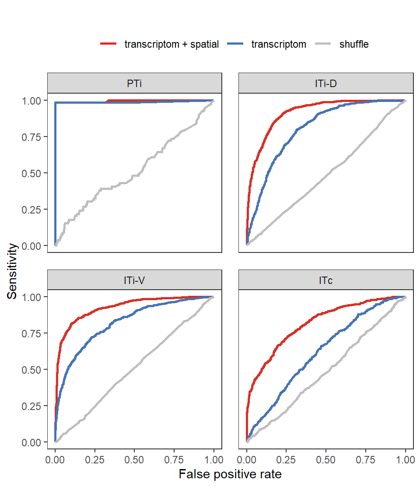
# PTi AUC (transcriptom + spatial 0.996) (transcriptom 0.990)
# ITi-D AUC (transcriptom + spatial 0.916) (transcriptom 0.806)
# ITi-V AUC (transcriptom + spatial 0.927) (transcriptom 0.822)
# ITc AUC (transcriptom + spatial 0.818) (transcriptom 0.625)
unique(paste(df$target,df$AUC,df$Experiment)) [1] "PTi 0.995561105561106 transcriptom + spatial"
[2] "PTi 0.99004329004329 transcriptom"
[3] "PTi 0.51885429733531 shuffle"
[4] "ITi-D 0.916172526670742 transcriptom + spatial"
[5] "ITi-D 0.806047997475893 transcriptom"
[6] "ITi-D 0.488636453093388 shuffle"
[7] "ITi-V 0.926896448861975 transcriptom + spatial"
[8] "ITi-V 0.822088745306157 transcriptom"
[9] "ITi-V 0.507083986438973 shuffle"
[10] "ITc 0.818375745017694 transcriptom + spatial"
[11] "ITc 0.625058204507357 transcriptom"
[12] "ITc 0.489953756296832 shuffle" ggsave("../pdf/Figure7/Figure7_B.pdf", plot = Figure7_B,
height = 5.8, width = 5, units = "in")seu <- sc_seu
transcriptom_mat <- seu@reductions$pca@cell.embeddings[,1:30]
spatial_mat <- seu@meta.data[,c("ML_new","DV_new","AP_new")]
colnames(spatial_mat) <- c("ML","DV","AP")
Barcode <- c('VIS-I','SSp-I','CP-I','AUD-I','RSP-I',
'BLA-I','ACB-I','ENTl-I','AId-I','ECT-I',
'ACB-C','PL-C','ECT-C','ENTl-C',
'BLA-C','CP-C','AId-C','RSP-C',
'MD-I','RE-I','DR-I','VTA-I','LHA-I','SC-I')
result_all <- data.frame()
for (i in 1:length(Barcode)){
proj_i <- Barcode[i]
y <- seu@meta.data[,proj_i]
y <- y[!is.na(seu@meta.data[,proj_i])]
y[which(y>0)] <- 1
trainIndex <- createDataPartition(y, p = .7, list = FALSE, times = 1)
y_train <- y[trainIndex]
y_test <- y[-trainIndex]
# transcriptom + spatial
X <- as.matrix(cbind(transcriptom_mat, spatial_mat))
X <- X[!is.na(seu@meta.data[,proj_i]),]
X_train <- Matrix(X[trainIndex,], sparse = T)
X_test <- Matrix(X[-trainIndex,], sparse = T)
dtrain <- xgb.DMatrix(data = X_train, label = y_train)
dtest <- xgb.DMatrix(data = X_test, label = y_test)
cv <- xgb.cv(data = dtrain, nrounds = 1000, nfold = 5, max_depth = 5, eta = 0.5,
early_stopping_rounds = 5, objective = "binary:logistic",
verbose = F)
model_xgb <- xgboost(data=dtrain, max_depth=5, eta=0.5, nthread = 5,
nround = cv$best_iteration, objective = "binary:logistic",
verbose = F)
pre <- predict(model_xgb, newdata = dtest)
#y_pre <- as.numeric(pre > 0.5)
#conf <- confusionMatrix(factor(y_pre, levels = c(0,1)),
# factor(y_test, levels = c(0,1)),
# mode = "everything", positive="1")
#Accuracy <- as.numeric(conf$overall["Accuracy"])
#F1 <- as.numeric(conf$byClass["F1"])
#PR <- pr.curve(scores.class0 = pre, weights.class0 = y_test, curve = TRUE)
ROC <- roc.curve(scores.class0 = pre, weights.class0 = y_test, curve = TRUE)
result1 <- data.frame('ROC_1'=ROC$curve[,1],
'ROC_2'=ROC$curve[,2],
'AUC'=ROC$auc,
'target'=proj_i,
'Experiment'="transcriptom + spatial"
)
# transcriptom
X <- as.matrix(transcriptom_mat)
X <- X[!is.na(seu@meta.data[,proj_i]),]
X_train <- Matrix(X[trainIndex,], sparse = T)
X_test <- Matrix(X[-trainIndex,], sparse = T)
dtrain <- xgb.DMatrix(data = X_train, label = y_train)
dtest <- xgb.DMatrix(data = X_test, label = y_test)
cv <- xgb.cv(data = dtrain, nrounds = 1000, nfold = 5, max_depth = 5, eta = 0.5,
early_stopping_rounds = 5, objective = "binary:logistic",
verbose = F)
model_xgb <- xgboost(data=dtrain, max_depth=5, eta=0.5, nthread = 5,
nround = cv$best_iteration, objective = 'binary:logistic',
verbose = F)
pre <- predict(model_xgb, newdata = dtest)
y_pre <- as.numeric(pre > 0.5)
conf <- confusionMatrix(factor(y_pre, levels = c(0,1)),
factor(y_test, levels = c(0,1)),
mode = "everything", positive="1")
Accuracy <- as.numeric(conf$overall["Accuracy"])
F1 <- as.numeric(conf$byClass["F1"])
ROC <- roc.curve(scores.class0 = pre, weights.class0 = y_test, curve = TRUE)
result2 <- data.frame('ROC_1'=ROC$curve[,1],
'ROC_2'=ROC$curve[,2],
'AUC'=ROC$auc,
'target'=proj_i,
'Experiment'="transcriptom"
)
# shuffle y
y_shuffle <- sample(y,length(y))
y_train <- y_shuffle[trainIndex]
y_test <- y_shuffle[-trainIndex]
X <- as.matrix(cbind(transcriptom_mat, spatial_mat))
X <- X[!is.na(seu@meta.data[,proj_i]),]
X_train <- Matrix(X[trainIndex,], sparse = T)
X_test <- Matrix(X[-trainIndex,], sparse = T)
dtrain <- xgb.DMatrix(data = X_train, label = y_train)
dtest <- xgb.DMatrix(data = X_test, label = y_test)
cv <- xgb.cv(data = dtrain, nrounds = 1000, nfold = 5, max_depth = 5, eta = 0.5,
early_stopping_rounds = 5, objective = "binary:logistic",
verbose = F)
model_xgb <- xgboost(data=dtrain, max_depth=5, eta=0.5, nthread = 5,
nround = cv$best_iteration, objective = 'binary:logistic',
verbose = F)
pre <- predict(model_xgb, newdata = dtest)
y_pre <- as.numeric(pre > 0.5)
conf <- confusionMatrix(factor(y_pre, levels = c(0,1)),
factor(y_test, levels = c(0,1)),
mode = "everything", positive="1")
Accuracy <- as.numeric(conf$overall["Accuracy"])
F1 <- as.numeric(conf$byClass["F1"])
ROC <- roc.curve(scores.class0 = pre, weights.class0 = y_test, curve = TRUE)
result3 <- data.frame('ROC_1'=ROC$curve[,1],
'ROC_2'=ROC$curve[,2],
'AUC'=ROC$auc,
'target'=proj_i,
'Experiment'="shuffle"
)
result <- rbind(result1, result2, result3)
result_all <- rbind(result_all, result)
}
#saveRDS(result_all,'../data/rds/ML/result_target.rds')Barcode <- c('VIS-I','SSp-I','CP-I','AUD-I','RSP-I',
'BLA-I','ACB-I','ENTl-I','AId-I','ECT-I',
'ACB-C','PL-C','ECT-C','ENTl-C',
'BLA-C','CP-C','AId-C','RSP-C',
'MD-I','RE-I','DR-I','VTA-I','LHA-I','SC-I')
result_all <- readRDS('../data/rds/ML/result_target.rds')
df <- result_all
df <- df[which(df$Experiment=="transcriptom + spatial"),]
df$target <- factor(df$target, levels = Barcode)
df$module <- ""
df$module[which(df$target %in% c('VIS-I','SSp-I','CP-I','AUD-I','RSP-I'))] <- "ITi-D"
df$module[which(df$target %in% c('BLA-I','ACB-I','ENTl-I','AId-I','ECT-I'))] <- "ITi-V"
df$module[which(df$target %in% c('ACB-C','PL-C','ECT-C','ENTl-C','BLA-C','CP-C','AId-C','RSP-C'))] <- "ITc"
df$module[which(df$target %in% c('MD-I','RE-I','DR-I','VTA-I','LHA-I','SC-I'))] <- "PTi"
df$module <- factor(df$module, levels = c("PTi","ITi-D","ITi-V","ITc"))
Figure7_C <-
ggplot(df, aes(x=ROC_1, y=ROC_2, color=target)) +
geom_line(linewidth=1) +
#geom_abline(slope = 1,intercept = 0,lty="dashed",color='gray') +
facet_wrap(~module, nrow = 2) +
theme_bw() +
theme(panel.grid=element_blank(),
panel.spacing = unit(1,"lines"),
plot.title = element_text(hjust = 0.5, face = "bold"),
legend.position = "top", legend.title = element_blank()) +
scale_color_manual(values = col_Barcode) +
labs(x='False positive rate', y='Sensitivity',
title = "")
Figure7_C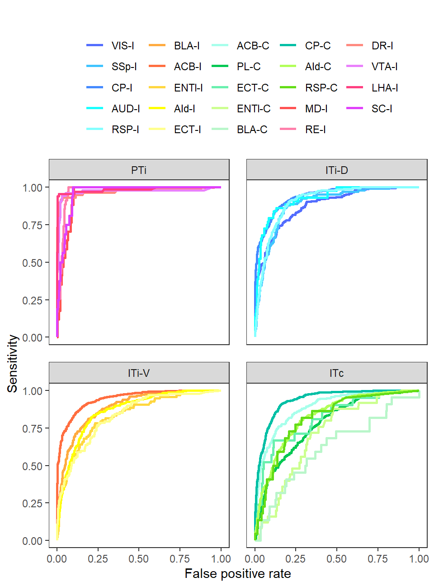
# VIS-I 0.881 SSp-I 0.890 CP-I 0.938 AUD-I 0.925 RSP-I 0.907
# BLA-I 0.890 ACB-I 0.945 ENTl-I 0.833 AId-I 0.867 ECT-I 0.835
# ACB-C 0.889 PL-C 0.778 ECT-C 0.820 ENTl-C 0.711 BLA-C 0.622 CP-C 0.937
# AId-C 0.827 RSP-C 0.814
# MD-I 0.951 RE-I 0.972 DR-I 0.973 VTA-I 0.972 LHA-I 0.984 SC-I 0.962
unique(paste(df$target,df$AUC)) [1] "VIS-I 0.881488663117901" "SSp-I 0.889573309698658"
[3] "CP-I 0.938402645992368" "AUD-I 0.925174825174825"
[5] "RSP-I 0.906869983948636" "BLA-I 0.890474823188055"
[7] "ACB-I 0.944931942109034" "ENTl-I 0.833408038248917"
[9] "AId-I 0.866658916531039" "ECT-I 0.834653875400576"
[11] "ACB-C 0.8892592511239" "PL-C 0.778075237072822"
[13] "ECT-C 0.82044866983571" "ENTl-C 0.710758377425044"
[15] "BLA-C 0.622408293460925" "CP-C 0.937142608342283"
[17] "AId-C 0.82741020975693" "RSP-C 0.813955342902711"
[19] "MD-I 0.951476310368505" "RE-I 0.971658986175115"
[21] "DR-I 0.973177636234961" "VTA-I 0.971886936592819"
[23] "LHA-I 0.98406424493381" "SC-I 0.961650485436893" ggsave("../pdf/Figure7/Figure7_C.pdf", plot = Figure7_C,
height = 6.75, width = 5, units = "in")spatial_MERFISH <- seu.inte@images$slice.44@coordinates[,c("x","y")]
spatial_MERFISH$CCF_metaRegion <- seu.inte@meta.data[rownames(spatial_MERFISH),'CCF_metaRegion']
MERFISH_cells <- rownames(spatial_MERFISH)[which(spatial_MERFISH$y > (-1/5*spatial_MERFISH$x-150) & spatial_MERFISH$CCF_metaRegion %in% c("MOs","ACAd","PL","ILA","DP"))]
rotation=10
x.scale=1.1
y.scale=1.1
x.move= 0.60
y.move = -2.7
spatial_test <- data.frame(
"x" = spatial_MERFISH[MERFISH_cells,"y"]/1112 + 0.5,
"y" = -spatial_MERFISH[MERFISH_cells,"x"]/1043 - 2
)
x0 = (spatial_test$x - median(spatial_test$x))
y0 = (spatial_test$y - median(spatial_test$y))
a = rotation / 180 * pi
x1 = x0 * cos(a) - y0 * sin(a)
y1 = x0 * sin(a) + y0 * cos(a)
x1 = x1 * x.scale + x.move
y1 = y1 * y.scale + y.move
spatial_test$x <- x1
spatial_test$y <- y1
transcriptom_test <- seu.inte@reductions$pca@cell.embeddings[MERFISH_cells,1:30]
transcriptom_train <- seu.inte@reductions$pca@cell.embeddings[colnames(sc_seu),1:30]
spatial_train <- sc_seu@meta.data[,c("ML_new","DV_new")]
colnames(spatial_train) <- c("x","y")
df_MERFISH <- spatial_test
df_MERFISH$CCF <- PFC.MERFISH$CCF_metaRegion[which(colnames(PFC.MERFISH) %in% MERFISH_cells)]
df_MERFISH$sample <- "MERFISH"
df_true <- sp.PFC.Left@meta.data[which(sp.PFC.Left$slice=="IT_slice_18"),c('ML_new','DV_new','ABA_metaRegion')]
colnames(df_true) <- c('x','y','CCF')
df_true$sample <- "our"
df <- merge(df_MERFISH, df_true, all = T)df$CCF <- factor(df$CCF, levels = c("MOs","ACAd","ACAv","PL","ORBm","ILA","DP"))
Figure7_D_1 <-
ggplot(df[which(df$sample=="our"),], aes(x=x,y=y,color=CCF)) +
geom_point() +
coord_fixed() +
scale_color_manual(values = c("MOs"="#2166AC","ACAd"="#67A9CF","ACAv"="#92C5DE","PL"="#D1E5F0","ORBm"="#FDDBC7","ILA"="#EF8A62","DP"="#B2182B")) +
labs(title = "SPIDER-Seq slice") +
theme_void() +
theme(text = element_text(size = 15),
plot.title = element_text(hjust = 0.5, size = 20))
Figure7_D_1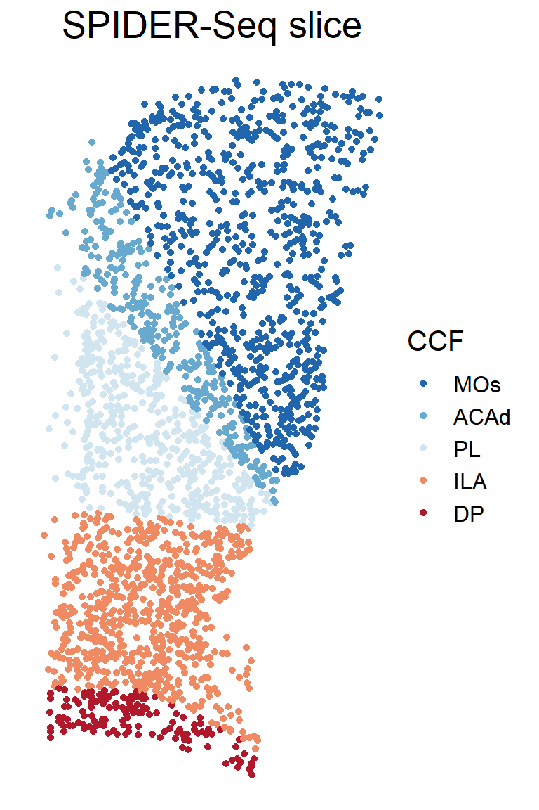
ggsave("../pdf/Figure7/Figure7_D_1.pdf", plot = Figure7_D_1,
height = 6, width = 4, units = "in")df$CCF <- factor(df$CCF, levels = c("MOs","ACAd","ACAv","PL","ORBm","ILA","DP"))
Figure7_D_2 <-
ggplot(df[which(df$sample=="MERFISH"),], aes(x=x,y=y,color=CCF)) +
geom_point() +
coord_fixed() +
scale_color_manual(values = c("MOs"="#2166AC","ACAd"="#67A9CF","ACAv"="#92C5DE","PL"="#D1E5F0","ORBm"="#FDDBC7","ILA"="#EF8A62","DP"="#B2182B")) +
labs(title = "MERFISH slice") +
theme_void() +
theme(text = element_text(size = 15),
plot.title = element_text(hjust = 0.5, size = 20))
Figure7_D_2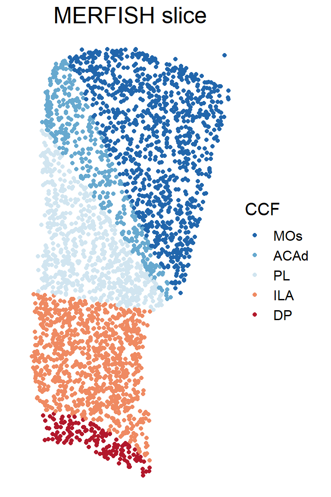
ggsave("../pdf/Figure7/Figure7_D_2.pdf", plot = Figure7_D_2,
height = 6, width = 4, units = "in")# only right half
# only "MOs","ACAd","PL","ILA","DP"
spatial_MERFISH <- seu.inte@images$slice.44@coordinates[,c("x","y")]
spatial_MERFISH$CCF_metaRegion <- seu.inte@meta.data[rownames(spatial_MERFISH),'CCF_metaRegion']
MERFISH_cells <- rownames(spatial_MERFISH)[which(spatial_MERFISH$y > (-1/5*spatial_MERFISH$x-150) & spatial_MERFISH$CCF_metaRegion %in% c("MOs","ACAd","PL","ILA","DP"))]
rotation=10
x.scale=1.1
y.scale=1.1
x.move= 0.60
y.move = -2.7
spatial_test <- data.frame(
"x" = spatial_MERFISH[MERFISH_cells,"y"]/1112 + 0.5,
"y" = -spatial_MERFISH[MERFISH_cells,"x"]/1043 - 2
)
x0 = (spatial_test$x - median(spatial_test$x))
y0 = (spatial_test$y - median(spatial_test$y))
a = rotation / 180 * pi
x1 = x0 * cos(a) - y0 * sin(a)
y1 = x0 * sin(a) + y0 * cos(a)
x1 = x1 * x.scale + x.move
y1 = y1 * y.scale + y.move
spatial_test$x <- x1
spatial_test$y <- y1
transcriptom_test <- seu.inte@reductions$pca@cell.embeddings[MERFISH_cells,1:30]
transcriptom_train <- seu.inte@reductions$pca@cell.embeddings[colnames(sc_seu),1:30]
spatial_train <- sc_seu@meta.data[,c("ML_new","DV_new")]
colnames(spatial_train) <- c("x","y")Barcode <- c('VIS-I','SSp-I','CP-I','AUD-I','RSP-I',
'BLA-I','ACB-I','ENTl-I','AId-I','ECT-I',
'ACB-C','PL-C','ECT-C','ENTl-C',
'BLA-C','CP-C','AId-C','RSP-C',
'MD-I','RE-I','DR-I','VTA-I','LHA-I','SC-I')
pre_Barcode <- spatial_test
for (i in 1:length(Barcode)){
proj_i <- Barcode[i]
y_train <- sc_seu@meta.data[,proj_i]
y_train <- y_train[!is.na(sc_seu@meta.data[,proj_i])]
y_train[which(y_train>0)] <- 1
# transcriptom + spatial
X_train <- as.matrix(cbind(transcriptom_train, spatial_train))
X_train <- X_train[!is.na(sc_seu@meta.data[,proj_i]),]
dtrain <- xgb.DMatrix(data = X_train, label = y_train)
X_test <- as.matrix(cbind(transcriptom_test, spatial_test))
cv <- xgb.cv(data = dtrain, nrounds = 1000, nfold = 5, max_depth = 5, eta = 0.5,
early_stopping_rounds = 5, objective = "binary:logistic",
verbose = F)
model_xgb <- xgboost(data=dtrain, max_depth=5, eta=0.5, nthread = 5,
nround = cv$best_iteration, objective = "binary:logistic",
verbose = F)
pre <- predict(model_xgb, newdata = X_test)
pre_Barcode[,proj_i] <- pre
print(i)
}
#saveRDS(pre_Barcode,'../data/rds/ML/pre_Barcode.rds')sp_Barcode_thread <- c("VIS-I"=0.25,"SSp-I"=0.25,"CP-I"=0.5,"AUD-I"=0.25,"RSP-I"=0.5, "BLA-I"=0.25,"ACB-I"=0.5,"AId-I"=0.75,"ECT-I"=0.5,"ACB-C"=0.25,"ECT-C"=0.5,"CP-C"=0.5,"AId-C"=0.25,"RSP-C"=0.5,"LHA-I"=0.5)pre_Barcode <- readRDS('../data/rds/ML/pre_Barcode.rds')
df_pre <- as.data.frame(pre_Barcode)
df_pre$CCF <- PFC.MERFISH@meta.data[MERFISH_cells,"CCF_metaRegion"]
df_true <- sp.PFC.Left@meta.data[which(sp.PFC.Left$slice=="IT_slice_18"),c('ML_new','DV_new','ABA_metaRegion',sp_Barcode)]
colnames(df_true)[1:3] <- c('x','y','CCF')
for (i in 1:length(sp_Barcode)){
df_pre[which(df_pre[,sp_Barcode[i]]>sp_Barcode_thread[i]), sp_Barcode[i]] <- 1
df_pre[which(df_pre[,sp_Barcode[i]]<=sp_Barcode_thread[i]), sp_Barcode[i]] <- 0
df_true[which(df_true[,sp_Barcode[i]]>0), sp_Barcode[i]] <- 1
}
df_pre_CCF <-
df_pre[,c(sp_Barcode,"CCF")] |>
group_by(CCF) |>
dplyr::summarize(across(1:15, ~ sum(.x))) |>
as.data.frame()
df_pre_CCF_norm <- apply(df_pre_CCF[,sp_Barcode], 2, function(x){x/sum(x)})
rownames(df_pre_CCF_norm) <- df_pre_CCF$CCF
df_pre_CCF_norm <- as.data.frame(df_pre_CCF_norm)
df_pre_CCF_norm$CCF <- rownames(df_pre_CCF_norm)
df_pre_CCF_norm <- pivot_longer(df_pre_CCF_norm, !CCF, names_to = "Target", values_to = "Value")
df_true_CCF <-
df_true[,c(sp_Barcode,"CCF")] |>
group_by(CCF) |>
dplyr::summarize(across(1:15, ~ sum(.x))) |>
as.data.frame()
df_true_CCF_norm <- apply(df_true_CCF[,sp_Barcode], 2, function(x){x/sum(x)})
rownames(df_true_CCF_norm) <- df_true_CCF$CCF
df_true_CCF_norm <- as.data.frame(df_true_CCF_norm)
df_true_CCF_norm$CCF <- rownames(df_true_CCF_norm)
df_true_CCF_norm <- pivot_longer(df_true_CCF_norm, !CCF, names_to = "Target", values_to = "Value")df_true <- df_true_CCF_norm
df_true$label <- ""
df_true$label[which(df_true$Value>0.25)] <- "*"
df_true$Target <- factor(df_true$Target, levels = sp_Barcode)
df_true$CCF <- factor(df_true$CCF, levels = rev(c("MOs","ACAd","PL","ILA","DP")))
breaks <- seq(0,0.5,0.01)
p_true <-
ggplot(df_true, aes(x=Target, y=CCF, fill=Value)) +
geom_raster() +
geom_text(aes(label=label),col ="black",size = 5) +
scale_fill_gradientn(limits=c(0,0.5), colours = colorRampPalette(c("navy","white","firebrick3"))(100), na.value="firebrick3") +
theme_bw() +
theme(axis.text.x = element_text(angle = 90, hjust = 1, vjust = 0.5),
axis.ticks.x = element_blank(),
panel.grid = element_blank(),
panel.border = element_rect(color = "black", size = 1)) +
labs(x="", y="")Warning: The `size` argument of `element_rect()` is deprecated as of ggplot2 3.4.0.
ℹ Please use the `linewidth` argument instead.df_pre <- df_pre_CCF_norm
df_pre$label <- ""
df_pre$label[which(df_pre$Value>0.25)] <- "*"
df_pre$Target <- factor(df_pre$Target, levels = sp_Barcode)
df_pre$CCF <- factor(df_pre$CCF, levels = rev(c("MOs","ACAd","PL","ILA","DP")))
breaks <- seq(0,0.5,0.01)
p_pre <-
ggplot(df_pre, aes(x=Target, y=CCF, fill=Value)) +
geom_raster() +
geom_text(aes(label=label),col ="black",size = 5) +
scale_fill_gradientn(limits=c(0,0.5), colours = colorRampPalette(c("navy","white","firebrick3"))(100), na.value="firebrick3") +
theme_bw() +
theme(axis.text.x = element_text(angle = 90, hjust = 1, vjust = 0.5),
panel.grid = element_blank(),
panel.border = element_rect(color = "black", size = 1)) +
labs(x="", y="")
Figure7_E <- plot_grid(p_true, p_pre, nrow = 2)
Figure7_E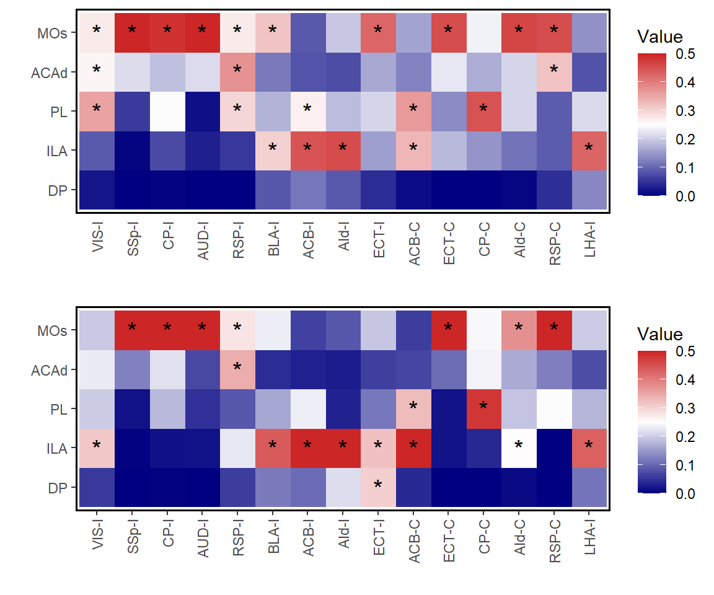
ggsave("../pdf/Figure7/Figure7_E.pdf", plot = Figure7_E,
height = 5, width = 6, units = "in")df <- df_true_CCF_norm
colnames(df) <- c("CCF", "Target", "True")
df$Predict <- df_pre_CCF_norm$Value
cor <- cor.test(df$True, df$Predict, "two.sided", "pearson")
R <- round(cor$estimate,2)
P <- format(cor$p.value, digits = 2)
Figure7_F <-
ggplot(df, aes(x=True, y=Predict)) +
#geom_point(size=0.5, color='black') +
geom_pointdensity(adjust = 1, size=2) +
geom_smooth(method = "lm", color='black', linewidth=0.5, se=F) +
scale_color_distiller(palette = "Spectral", direction = -1) +
theme_bw() +
theme(panel.grid = element_blank(), text = element_text(size = 15),
legend.position = "none") +
labs(x="True", y="Predict",
title = paste('R =',R,', P =',P,sep=' ')) +
ylim(0,1) +
xlim(0,1)
Figure7_F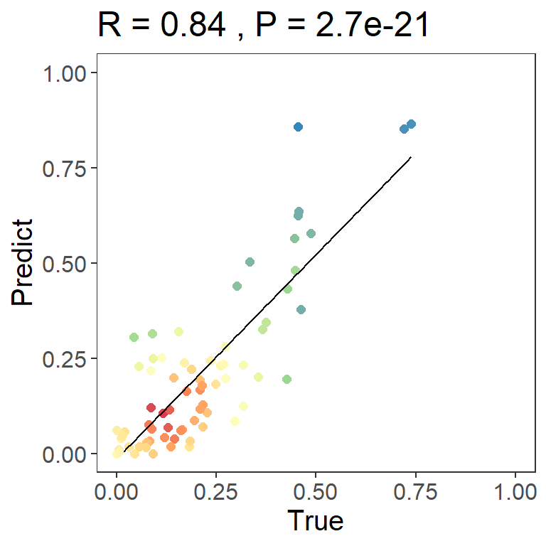
ggsave("../pdf/Figure7/Figure7_F.pdf", plot = Figure7_F,
height = 4, width = 4, units = "in")proj_module <- c("PTi","ITi-D","ITi-V","ITc")
pre_module <- spatial_test
for (i in 1:length(proj_module)){
proj_i <- proj_module[i]
y_train <- rep(0,nrow(sc_seu@meta.data))
y_train[which(sc_seu$Proj_module == proj_i)] <- 1
# transcriptom + spatial
X_train <- as.matrix(cbind(transcriptom_train, spatial_train))
X_train <- Matrix(X_train, sparse = T)
X_test <- as.matrix(cbind(transcriptom_test, spatial_test))
X_test <- Matrix(X_test, sparse = T)
dtrain <- xgb.DMatrix(data = X_train, label = y_train)
cv <- xgb.cv(data = dtrain, nrounds = 1000, nfold = 5, max_depth = 5, eta = 0.5,
early_stopping_rounds = 5, objective = "binary:logistic",
verbose = F)
model_xgb <- xgboost(data=dtrain, max_depth=5, eta=0.5, nthread = 5,
nround = cv$best_iteration, objective = "binary:logistic",
verbose = F)
pre <- predict(model_xgb, newdata = X_test)
pre_module[,proj_i] <- pre
}module <- proj_module[1]
pre_module$Module <- apply(pre_module[,proj_module], 1, function(x){
proj_module[which.max(x)]
})
Figure7_G_pre <-
ggplot() +
geom_point(pre_Barcode[which(pre_module$Module != module),], mapping=aes(x=x,y=y),
size=0.8, color="#00204DFF") +
geom_point(pre_Barcode[which(pre_module$Module == module),], mapping=aes(x=x,y=y),
size=0.8, color="#FFEA46FF") +
ggdark::dark_theme_void() +
labs(title = module) +
theme(plot.title = element_text(size = 20, hjust = 0.5)) +
coord_fixed() +
xlim(0,1.5) +
ylim(-4.3,-1.25)
Figure7_G_pre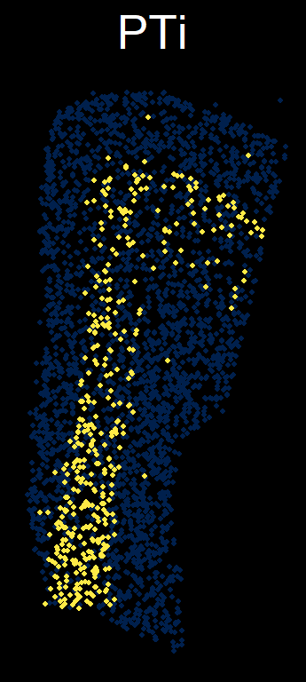
ggsave(paste("../pdf/Figure7/Figure7_G/pre_",module,".png",sep=""),
plot = Figure7_G_pre,
height = 4, width = 2, units = "in")module <- proj_module[1]
slice <- 'IT_slice_18'
df <- sp.PFC.Left@meta.data[,c("ML_new","DV_new","Proj_module")]
df$Proj_module[is.na(df$Proj_module)] <- ""
colnames(df)[1:2] <- c("x","y")
df <- df[which(sp.PFC.Left$slice==slice),]
Figure7_G_true <-
ggplot(df, aes()) +
geom_point(df[which(df$Proj_module != module),], mapping=aes(x=x,y=y),
size=0.8, color="#00204DFF") +
geom_point(df[which(df$Proj_module == module),], mapping=aes(x=x,y=y),
size=0.8, color="#FFEA46FF") +
ggdark::dark_theme_void() +
labs(title = module) +
theme(plot.title = element_text(size = 20, hjust = 0.5)) +
coord_fixed() +
xlim(0,1.5) +
ylim(-4.3,-1.25)
Figure7_G_true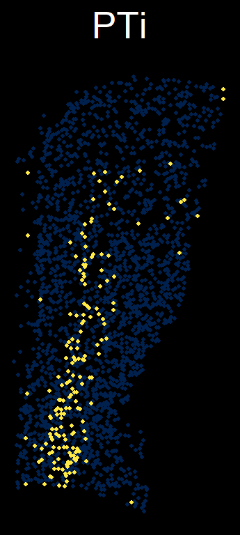
ggsave(paste("../pdf/Figure7/Figure7_G/true_",module,".png",sep=""),
plot = Figure_7G_true,
height = 4, width = 2, units = "in")i=1
module <- sp_Barcode[i]
Figure7_H_pre <-
ggplot() +
geom_point(pre_Barcode[which(pre_Barcode[,module]<sp_Barcode_thread[i]),],
mapping=aes(x=x,y=y), size=0.8, color="#00204DFF") +
geom_point(pre_Barcode[which(pre_Barcode[,module]>=sp_Barcode_thread[i]),],
mapping=aes(x=x,y=y), size=0.8, color="#FFEA46FF") +
ggdark::dark_theme_void() +
labs(title = module) +
theme(plot.title = element_text(size = 20, hjust = 0.5)) +
coord_fixed() +
xlim(0,1.5) +
ylim(-4.3,-1.25)
Figure7_H_pre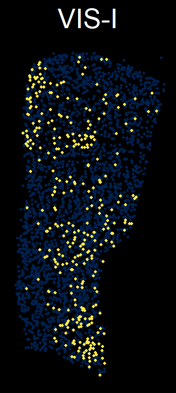
ggsave(paste("../pdf/Figure7/Figure7_H/pre_",module,".png",sep=""),
plot = Figure7_H_pre,
height = 4, width = 2, units = "in")i=1
module <- sp_Barcode[i]
slice <- 'IT_slice_18'
df <- sp.PFC.Left@meta.data[,c("ML_new","DV_new",sp_Barcode)]
colnames(df)[1:2] <- c("x","y")
df <- df[which(sp.PFC.Left$slice==slice),]
Figure7_H_true <-
ggplot(df, aes()) +
geom_point(df[which(df[,module]==0),], mapping=aes(x=x,y=y),
size=0.8, color="#00204DFF") +
geom_point(df[which(df[,module]>0),], mapping=aes(x=x,y=y),
size=0.8, color="#FFEA46FF") +
ggdark::dark_theme_void() +
labs(title = module) +
theme(plot.title = element_text(size = 20, hjust = 0.5)) +
coord_fixed() +
xlim(0,1.5) +
ylim(-4.3,-1.25)
Figure7_H_true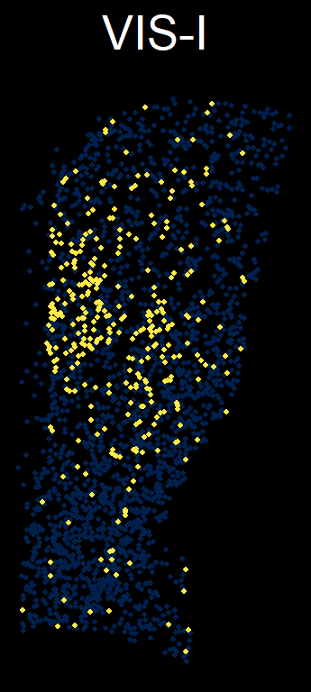
ggsave(paste("../pdf/Figure7/Figure7_H/true_",module,".png",sep=""),
plot = Figure7_H_true,
height = 4, width = 2, units = "in")